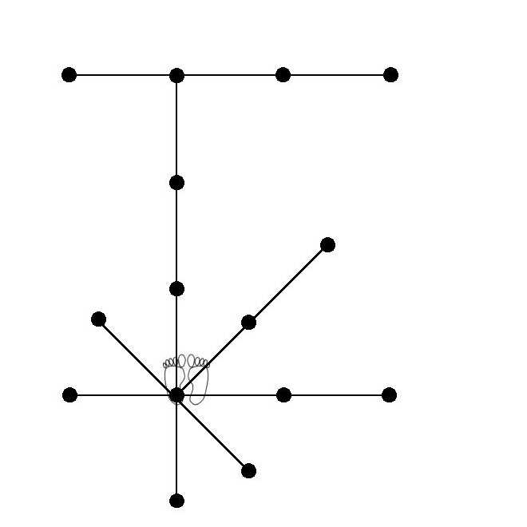

Ten-i-no Kata
* Alle standen in Kokutsu-dachi en alle stoten (tsuki) op chudan-hoogte.
1. Uitgangspositie Heisoku-dachi.
2. Rechtervoet naar rechts verplaatsen in Kokutsu-dachi (stand naar links!),
met links Gedan-barai.
3. Vorderen met Oi-tsuki, Ki-ai!
4. Draai rechts 180°, met rechts Gedan-barai.
5. Vorderen met Oi-tsuki.
6. Stap achterwaarts met rechts Gedan-barai.
7. Draai links 90° en verplaats daarbij de rechtervoet naar achteren,
met links Uchi-uke.
8. Vorderen met Oi-tsuki.
9. Nogmaals vorderen met Oi-tsuki.
10. Op de plaats Gyaku-tsuki.
11. Vorderen met Gyaku-tsuki, Ki-ai!
12. Draai links 270° met links Gedan-barai.
13. Vorderen in Zenkutsu-dachi met Oi-tsuki.
14. Draai rechts 180° met rechts Gedan-barai (in Kokutsu-dachi).
15. Vorderen in Zenkutsu-dachi met Oi-tsuki.
16. Trek linkervoet bij en draai rechts 90° in Kokutsu-dachi met rechts Uchi-uke.
17. Stap achterwaarts en met links Age-uke.
18. Nogmaals stap achterwaarts en met rechts Age-uke.
19. Trek rechtervoet bij en dan 45° schuin naar (rechts)achteren, met links Shuto-uke.
20. Vorderen met rechts Soto-uke, hierbij de pols van de rechterhand tegen de vlakke linkerhand slaand.
21. Op de plaats met rechts Jun-tsuki jodan.
22. Op de plaats rechtervoet verplaatsen in Zenkutsu-dachi met Gyaku-tsuki.
23. Draai rechts 90° (in Kokutsu-dachi), met rechts Shuto-uke.
24. Vorderen met links Soto-uke, hierbij de pols van de linkerhand tegen de vlakke rechterhand slaand.
25. Op de plaats met links Jun-tsuki jodan.
26. Op de plaats linkervoet verplaatsen in Zenkutsu-dachi met Gyaku-tsuki.
27. Achteruit in Kokutsu-dachi met Gedan-barai, Ki-ai!
28. Voorste voet bijtrekken tot Heisoku-dachi (eindhouding) en afgroeten.
Ik ben nog niet helemaal gelukkig met het gedeelte in de oranje kleur... Als iemand weet hoe dit correct heet, laat me dat s.v.p. dan weten. Het liefst mèt bronvermelding.
Terug naar Kata-pagina